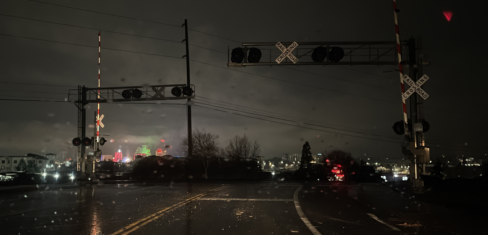

Winter Break
January 2, 2026
As the slot machines jingle for what feels like the billionth time at the airport, I ponder my next adventure to a continent I’ve never been to before.
But first, winter break and the new year! Winter break was the first time I ever returned home; I expected to feel out of place, but I was surprised as to how quickly I reacclimatized. Life felt normal, and in a circular way, the above-average level of normality was what made me feel off.
I didn’t have much time to ponder that though; instead, I got to hang out with friends, many of whom are seniors in high school this year. They’re going through the gauntlet of regular decision college applications, and I’m realizing how lucky I am to not have to deal with this. I was also fortunate enough to not have had to deal with it the year I was applying, because the regular decision timing is messed up. They land around holiday season, supposedly the time you get time off to spend with family and friends. But so long as the college application system keeps running, the cycle keeps turning.
While helping one of my friends at a coffee shop, I ran into people from elementary/middle school who I hadn’t seen in at least four years. It was super cool to catch up a little bit; honestly, I wish I had more time to yap, because they lived in a completely different bubble than me. I didn’t have the traditional high school experience; I went to a pretty competitive environment, and the student body was very small. As a result, I cared a ton about college applications and was blinded by the idea of prestige and name.
Additionally, I had a terrible middle school experience, but the people I ran into were a nice bunch from what I can remember. I really wish I was wiser about choosing who to be around in middle school, because I would’ve definitely had a much better experience.
Regardless, I think everyone was a little cooked in middle school one way or another — all part of the process of growing up — and I’m glad I got to see us all (allegedly) grown up now.
•❃°•°❀°•°❃•
I started a crochet project, and I’m still not sure if I regret it or not. It was a poker-inspired granny square bag, because I had a lot of red and black yarn. I never made granny squares before, and I meant to start a project involving them. The squares ended up being 75% square-like, and the resulting bag is puffy. I don’t love how it turned out, but I suppose it’s okay for a first go.
Mainly, I wish this project didn’t take so long, because there were so many other things I wanted to do. I got into Silksong, and it’s a beautifully crafted game. I haven’t been invested in a video game in a while, but I think this game suits me. I really enjoy exploration, which this game allows for. The fights in the game are also quite challenging, but I think they progress in a nice way, especially since you can see what skills the game developers want the player to sharpen.
(slight spoilers) I was fighting the the Bell Beast (which bulgogi merchant and I affectionately call the “bell jawn”), and this took me a while to complete. I got pretty good at the downward dash, which helped a lot. Once I made it through, I made a little more progress. I was sharing bulgogi merchant’s account, which I didn’t think much of at the time. The next time I logged on and entered the same arena, the bell jawn showed up, which was my terrifying jumpscare of the day. Apparently, my save didn’t upload to the cloud because there was some saving conflict, and I lost a bunch of progress. It was pretty funny though, and getting through the boss the second time wasn’t bad at all.
•❃°•°❀°•°❃•
I also got to edit a lot of videos! There’s a ton of travel footage over the years that I’m super behind on. Part of the reason I didn’t edit them was because I didn’t actually like the shots I got. I wanted more dialogue, but most of my clips were still images of scenery. But having these clips allowed me to explore a little outside of my regular editing style with vlogs. I have a bunch of videos scheduled out to March that are shorter form; I’d be curious as to how they’d perform.
•❃°•°❀°•°❃•
It’s strange to think that I’ll be spending most January in a different country. I’m headed to Rwanda for a MISTI GTL program, where I’ll be teaching competition math! It should be super interesting, and there will certainly be a blog post about that.
Until then, toodleloo!
✩₊˚.⋆☾⋆⁺₊✧
That is all, consider subscribing or